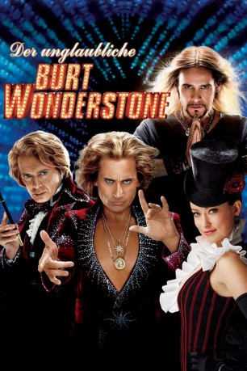
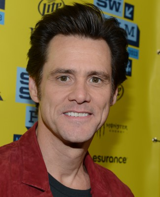
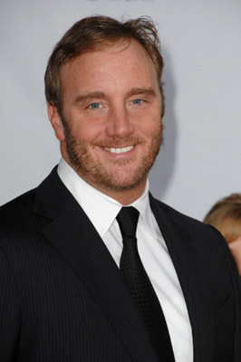
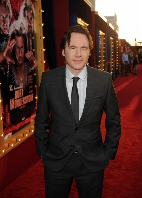
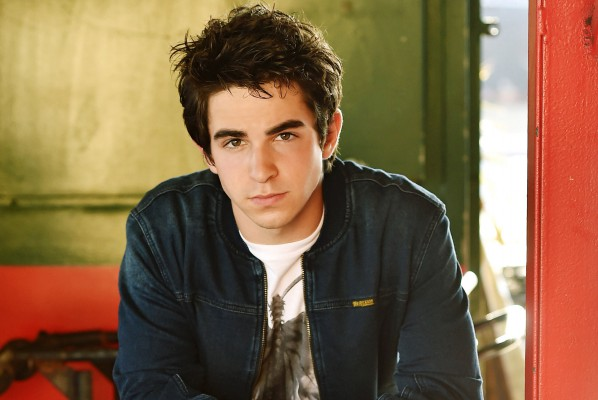
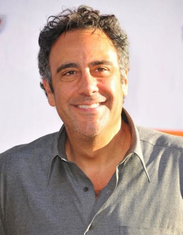
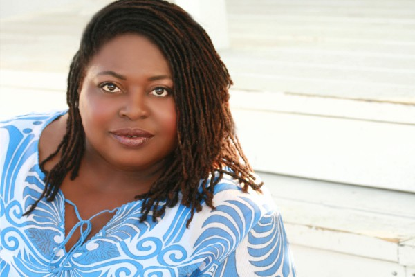
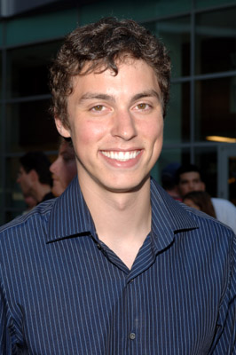
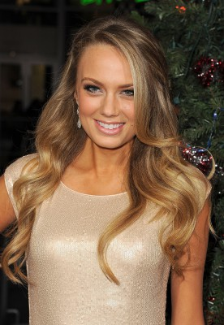

#6409 Der Unglaubliche Burt Wonderstone
Alternativ: The Incredible Burt Wonderstone
 
 IMDB-Wertung: 5.9 / 10
IMDB-Wertung: 5.9 / 10  Metascore: 0
Metascore: 0 
Die Zauberkünstler-Superstars Burt Wonderstone und Anton Marvelton beherrschen Las Vegas seit Jahren und scheffeln Millionen, wobei der bombastische Aufwand ihrer zelebrierten Illusionen sehr genau Burts ständig expandierendem Ego entspricht. Aktuell besteht das größte Täuschungsmanöver der beiden allerdings darin, dem Publikum ihre unverbrüchliche Freundschaft vorzugaukeln, denn privat können sie einander schon längst nicht mehr ausstehen. Ihr Problem ist aber auch der unkonventionelle Straßenzauberer Steve Gray: Er schart eine wachsende Kultgemeinde um sich, indem er derart extravagante Tricks präsentiert, dass selbst die Show der Stars dagegen verblasst. Eine letzte Chance bekommen Burt und Anton allerdings noch, um ihre Teamarbeit professionell und privat auf Vordermann zu bringen - doch dazu müsste Burt sich auf das besinnen, was ihn ursprünglich für die Zauberei begeistert hat...
Jahr: 2013
Dauer: 100 Minuten
FSK: 16
Land: USA Studio: Warner Bros.Tonspuren: DD5.1 - ,
Untertitel: Deutsch,
Auflösung: 1080p (1920x800) Größe: 5867 MB
Genre: Komödie
Regisseur: Don Scardino
Drehbuch: Jonathan Goldstein
Soundtrack:
Darsteller:
 Steve Carell als Burt Wonderstone
Steve Carell als Burt Wonderstone Steve Buscemi als Anton Marvelton
Steve Buscemi als Anton Marvelton Olivia Wilde als Jane
Olivia Wilde als Jane-  Jim Carrey als Steve Gray
 James Gandolfini als Doug Munny
James Gandolfini als Doug Munny Alan Arkin als Rance Holloway
Alan Arkin als Rance Holloway-  Jay Mohr als Rick the Implausible
-  Michael Herbig als Lucius Belvedere
- Mason Cook als Young Burt
- Luke Vanek als Young Anton
-  Zachary Gordon als Bully
- Richard Wolffe als Richard Wolffe
- Erin Burnett als Erin Burnett
-  Brad Garrett als Dom
- David Copperfield als David Copperfield
-  Sonya Eddy als Hanna
 Ron Ostrow als Jim the Bartender
Ron Ostrow als Jim the Bartender- Joshua Erenberg als Judah Munny
- Robert Ray Manning Jr. als Male Doctor
 Gillian Jacobs als Miranda
Gillian Jacobs als Miranda- Christina Gausas als Mother
- Tate Hanyok als Nicole #1
 Charlie Hartsock als Onlooker
Charlie Hartsock als Onlooker-  John Francis Daley als Paramedic 1
- Freedom als Paramedic 2
-  Melissa Ordway als Reporter in Las Vegas
- Forrest Wheeler als Cambodian Boy
- Mia Sun als Villager
- Kelly Sry als Villager
- Augie Isaac als Young Boy
- Mark Engelhardt als Stagehand
- Derek Graf als Guy
- John Lewis als Buddy
 Daniel Spink als Spectator
Daniel Spink als Spectator- Chad Kultgen als Spectator
 Marceline Hugot als Piñata Woman
Marceline Hugot als Piñata Woman- Leni Ito als Japanese Girl
- Jonathan Goldstein als Stagehand at B&A Theater
- Chyna Chuu als Doug Munny's Valet
- Gina Ann als Helga Masseuse , uncredited
- Neil H. Berkow als Las Vegas Audience Member , uncredited
- Tatjana Bluchel als German , uncredited
- Nicole Chauvet als Magician Fan , uncredited
- Kali Chung als Nicole , uncredited
- Tasha Courtney als Nicole #2 , uncredited
- Nick Epper als Left Nut Man , uncredited
- Lanette Fugit Hannah als News Reporter , uncredited
- Cary Huff als Casino Gambler , uncredited
- Amber Jenkins als Magic Show Audience , uncredited
- Raven Krogstad als Hotbox Photographer , uncredited
Datei: X:\2013(N-Z)\Unglaubliche Burt Wonderstone, Der (2013, FSK16, 1920x800).mkv seit 20.06.2017
Festplatte: HD 2013(I-Z)-2014(A-Z)
 Es gibt insgesamt 133 Filme in der Gruppe '2013(N-Z)'
Es gibt insgesamt 133 Filme in der Gruppe '2013(N-Z)'